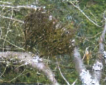

Jack pine is the most common type of tree that you will encounter on this trail. Probe the ground with your fingers and feel the sandy soil beneath the shallow layer of duff. These soils are poorly developed and subject to water and wind erosion.The deep tap roots of these trees must reach down to capture nutrients, as well as to provide stability.
Touch the"tweezer-like"twinned needles of the pine. Feel the thick bark that protects these trees from ground fires. Find a pine cone and notice the tough resin that holds the scales closed. Only heat - or a squirrel's teeth - will release the seeds within. In fact,  it was a previous fire that gave birth to this forest.
Glance up at the tangled nest of small branches - aptly named "witches broom" - a reaction caused by a tiny parasitic plant, dwarf mistletoe, which has infected these trees. Dwarf mistletoe catapults its sticky seeds as far as 20 meters onto the branches of adjacent trees. Infected trees weaken over time and may eventually die.
As you continue to follow the trail, listen for the chatter of red squirrels and look for patches of dry ground cranberry and bearberry on the forest floor. A "wall of spruce" will signal your arrival at the next stop.